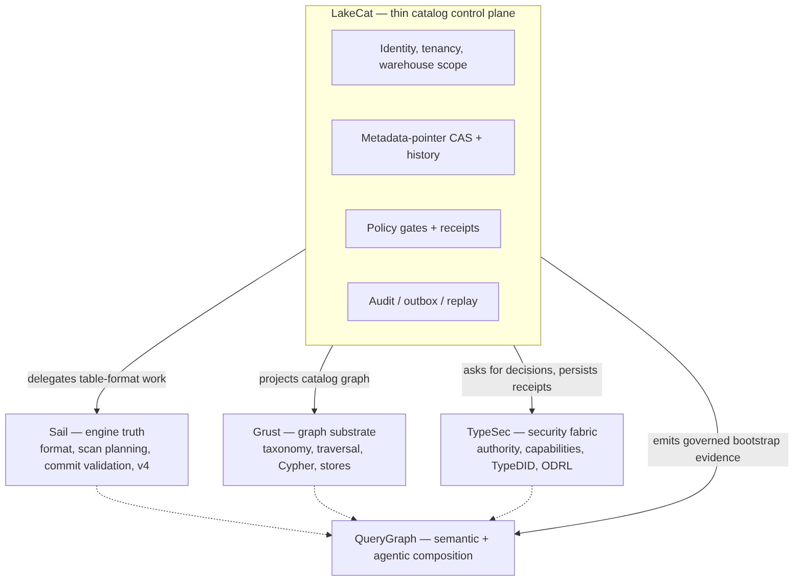

The vocabulary tells you which category a word lives in. The boundary model says which repository owns the work and why. LakeCat is deliberately thin: it keeps identity, tenancy, metadata-pointer state, policy gates, idempotent commits, and integration events — and delegates everything reusable.

The ownership rule, stated once:
| Concern | Owner | LakeCat keeps only |
|---|---|---|
| Iceberg format, manifests, scan planning, pruning, delete handling, v4 | Sail | The call into Sail and the proof binding its result |
| Graph schema, taxonomy, traversal, stores, Cypher | Grust | The catalog-facing sink/projection boundary |
| Authorization, policy composition, capabilities, TypeDID, credential decisions | TypeSec | The request for a decision and the persisted receipt |
| Croissant/CDIF/OSI/ODRL/OpenLineage composition, agent workflows | QueryGraph | The governed bootstrap bundle it emits |
| Identity, tenancy, pointer CAS, idempotency, audit, outbox, replay | LakeCat | All of it — this is the thin catalog |
This is also the answer to the recurring “is it an extension or a standard?” question. LakeCat is opinionated in code and modest in standardization. “Use Rust,” “use Turso,” “use TypeSec,” “import QGLake,” “project into Grust” are project choices, not proposals. The portable ideas are narrower and stated without product names: reject idempotency drift; record redacted pointer history; emit transactional catalog-event identity; admit only scoped replay evidence; prove a governed scan was narrowed by an engine. A proposal that forced every Iceberg catalog to understand QueryGraph, TypeSec, Grust, or Turso would narrow the ecosystem; a proposal that says “a catalog may publish redacted, replayable commit evidence” leaves room for many implementations. Prove the stronger shape locally, then extract only the database-neutral, policy-neutral, engine-neutral part.